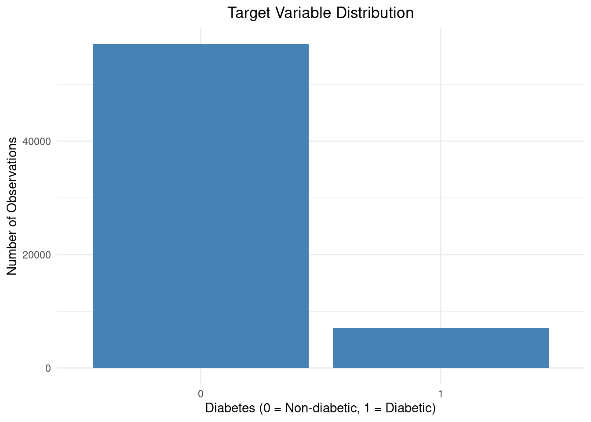

library(data.table)
raw_df <- fread("../data/diabetes_prediction_dataset.csv")Supervised Classification of Diabetes Data
Introduction
The data used to perform this report(?) was obtained from an open-access Kaggle data repository. Accessing this data can be done through the link below:
https://www.kaggle.com/datasets/iammustafatz/diabetes-prediction-dataset
The primary objective of this study is to perform a binary classification task with logistic regression, identifying diabetic from non-diabetic observations. Second to this would be examining the effect of two different resampling approaches: (i) undersampling and (ii) oversampling, to the performance of the model.
Data Pre-processing
To yield a performant model, it’s imperative for our input data to be clean. This involves pruning observations from the original data file, scaling values, and the appropriate value conversions, among other appropriate steps that may arise.
On a high level, what is done in this subsection of the notebook(?) are the following:
- Loading the dataset into R studio.
- Summary statistics informing data cleanup process.
- Data cleanup.
Loading Data
In this step the diabetes_prediction_dataset.csv file is stored into a dataframe.
After this, the head and tail of the loaded dataframe was inspected to see if the file was read into the environment.
Head
head(raw_df) gender age hypertension heart_disease smoking_history bmi HbA1c_level
<char> <num> <int> <int> <char> <num> <num>
1: Female 80 0 1 never 25.19 6.6
2: Female 54 0 0 No Info 27.32 6.6
3: Male 28 0 0 never 27.32 5.7
4: Female 36 0 0 current 23.45 5.0
5: Male 76 1 1 current 20.14 4.8
6: Female 20 0 0 never 27.32 6.6
blood_glucose_level diabetes
<int> <int>
1: 140 0
2: 80 0
3: 158 0
4: 155 0
5: 155 0
6: 85 0Tail
tail(raw_df) gender age hypertension heart_disease smoking_history bmi HbA1c_level
<char> <num> <int> <int> <char> <num> <num>
1: Female 36 0 0 No Info 24.60 4.8
2: Female 80 0 0 No Info 27.32 6.2
3: Female 2 0 0 No Info 17.37 6.5
4: Male 66 0 0 former 27.83 5.7
5: Female 24 0 0 never 35.42 4.0
6: Female 57 0 0 current 22.43 6.6
blood_glucose_level diabetes
<int> <int>
1: 145 0
2: 90 0
3: 100 0
4: 155 0
5: 100 0
6: 90 0Removing Nulls
Before further pre-processing steps (scaling, value conversion etc.), observations that aren’t complete will be removed. Essentially rows with missing data are to be discarded from the considered dataset.
Counting Nulls / Attribute
colnames(raw_df)[1] "gender" "age" "hypertension"
[4] "heart_disease" "smoking_history" "bmi"
[7] "HbA1c_level" "blood_glucose_level" "diabetes" From this cell it can be gathered that there are 9 attributes all in all. From the whole dataset with respect to each of these attributes, we count the amount of nulls.
null_counts <- raw_df[, lapply(.SD, function(x) sum(is.na(x) | trimws(x) == ""))]
print(null_counts) gender age hypertension heart_disease smoking_history bmi HbA1c_level
<int> <int> <int> <int> <int> <int> <int>
1: 0 0 0 0 0 0 0
blood_glucose_level diabetes
<int> <int>
1: 0 0The result of the previous cell shows that all rows have complete data.
Value Conversions
Part of data pre-processing is also ensuring that observations are stored in programmatically convenient formats. In the context of R an example of this would be storing categorical/discrete data as factors.
str(raw_df) can be used to inspect how these values are stored in the dataframe.
str(raw_df)Classes 'data.table' and 'data.frame': 100000 obs. of 9 variables:
$ gender : chr "Female" "Female" "Male" "Female" ...
$ age : num 80 54 28 36 76 20 44 79 42 32 ...
$ hypertension : int 0 0 0 0 1 0 0 0 0 0 ...
$ heart_disease : int 1 0 0 0 1 0 0 0 0 0 ...
$ smoking_history : chr "never" "No Info" "never" "current" ...
$ bmi : num 25.2 27.3 27.3 23.4 20.1 ...
$ HbA1c_level : num 6.6 6.6 5.7 5 4.8 6.6 6.5 5.7 4.8 5 ...
$ blood_glucose_level: int 140 80 158 155 155 85 200 85 145 100 ...
$ diabetes : int 0 0 0 0 0 0 1 0 0 0 ...
- attr(*, ".internal.selfref")=<externalptr> The previous query showed that the following attributes: (i) gender, (ii) hypertension, (iii) heart_disease, (iv) smoking_history, and (v) diabetes, are categorical. However, the attribute smoking_history seems to have more than just 2 possible values.
To be sure, an inspection of all unique values in these attributes ascertains whether or not the value is binary or not.
categorical_attr <- c("gender", "hypertension", "heart_disease", "smoking_history", "diabetes")
unique_vals <- lapply(raw_df[, ..categorical_attr], unique)
print(unique_vals)$gender
[1] "Female" "Male" "Other"
$hypertension
[1] 0 1
$heart_disease
[1] 1 0
$smoking_history
[1] "never" "No Info" "current" "former" "ever"
[6] "not current"
$diabetes
[1] 0 1It can be seen that the attributes: hypertension, heart_disease, and diabetes, already only have two possible values; gender and smoking_history however do not.
Handling gender Attribute
Surface level research shows that individuals with non-binary gender identities show higher incidence rates for other diabetes related comorbidities, e.g. smoking (Tan et. al. 2021). This suggests that gender identities beyond just male and female may provide the model with sufficient information, along with other features, for classification.
| gender | description | encoding |
|---|---|---|
| Male | Individual whose sex is Male | 0 |
| Female | Individual whose sex is Female | 1 |
| Other | Individual with non-binary gender identity | 2 |
These encodings serve only to be labels that are programmatically convenient to work with in processing.
gender_encodings = c(
"Male" = 0,
"Female" = 1,
"Other" = 2
)
raw_df[, gender_code := gender_encodings[gender]]
print(raw_df) gender age hypertension heart_disease smoking_history bmi
<char> <num> <int> <int> <char> <num>
1: Female 80 0 1 never 25.19
2: Female 54 0 0 No Info 27.32
3: Male 28 0 0 never 27.32
4: Female 36 0 0 current 23.45
5: Male 76 1 1 current 20.14
---
99996: Female 80 0 0 No Info 27.32
99997: Female 2 0 0 No Info 17.37
99998: Male 66 0 0 former 27.83
99999: Female 24 0 0 never 35.42
100000: Female 57 0 0 current 22.43
HbA1c_level blood_glucose_level diabetes gender_code
<num> <int> <int> <num>
1: 6.6 140 0 1
2: 6.6 80 0 1
3: 5.7 158 0 0
4: 5.0 155 0 1
5: 4.8 155 0 0
---
99996: 6.2 90 0 1
99997: 6.5 100 0 1
99998: 5.7 155 0 0
99999: 4.0 100 0 1
100000: 6.6 90 0 1It can be seen that gender has been successfully encoded into gender_code. As such, the original column can now be discarded.
raw_df[, gender := NULL]
print(raw_df) age hypertension heart_disease smoking_history bmi HbA1c_level
<num> <int> <int> <char> <num> <num>
1: 80 0 1 never 25.19 6.6
2: 54 0 0 No Info 27.32 6.6
3: 28 0 0 never 27.32 5.7
4: 36 0 0 current 23.45 5.0
5: 76 1 1 current 20.14 4.8
---
99996: 80 0 0 No Info 27.32 6.2
99997: 2 0 0 No Info 17.37 6.5
99998: 66 0 0 former 27.83 5.7
99999: 24 0 0 never 35.42 4.0
100000: 57 0 0 current 22.43 6.6
blood_glucose_level diabetes gender_code
<int> <int> <num>
1: 140 0 1
2: 80 0 1
3: 158 0 0
4: 155 0 1
5: 155 0 0
---
99996: 90 0 1
99997: 100 0 1
99998: 155 0 0
99999: 100 0 1
100000: 90 0 1Handling smoking_history Attribute
The earlier cell that was supposed to detect and count for null values was not able to catch smoking_history observations marked with No Info. That was because the previous function looked for values stored in R as NA or as empty strings. Including these observations may just be noise for the classifier, as such observations with No Info in smoking_history are discarded.
row_count_before <- raw_df[, .N] # row count before drop
print(paste("Row count before drop: ", row_count_before))[1] "Row count before drop: 100000"raw_df <- raw_df[!(smoking_history == "No Info")]
unique(raw_df$smoking_history)[1] "never" "current" "former" "ever" "not current"row_count_after <- raw_df[, .N] # row count after drop
print(paste("Row count after drop: ", row_count_after))[1] "Row count after drop: 64184"To turn the remaining string values into meaningful numerical data, ordinal encoding comes to mind. Notice how the magnitude of smoking_history can be surmised from the current values; those who have never smoked have, by definition, smoked less than those who were former smokers. Through the same intuition, it can be said that current smokers smoke the most. Formal definitions for these terms can be obtained from online medical sources.
From this information these encodings were generated:
| smoking_history | description | encoding |
|---|---|---|
| never | never smoked before, or has smoked less than 100 cigarettes in their lifetime | 0 |
| former | smoked at least 100 cigarettes in their lifetime but does not currently smoke | 1 |
| not current | smoked at least 100 cigarettes in their lifetime but does not currently smoke | 1 |
| ever | term encompassing both current and former smokers, anyone who has smoked at least 100 cigarettes in their lifetime | 1 |
| current | smoked at least 100 cigarettes in their lifetime and currently smokes | 2 |
It must be noted that in the context of this project, the terms former, ever, and not current, were not defined in the data card. As such, operative definitions were gleaned from the CDC QuickStats article hyperlinked above.
smoking_encodings <- c(
"never" = 0,
"former" = 1,
"not current" = 1,
"ever" = 1,
"current" = 2
)
raw_df[, smoking_code := smoking_encodings[smoking_history]]
print(raw_df) age hypertension heart_disease smoking_history bmi HbA1c_level
<num> <int> <int> <char> <num> <num>
1: 80 0 1 never 25.19 6.6
2: 28 0 0 never 27.32 5.7
3: 36 0 0 current 23.45 5.0
4: 76 1 1 current 20.14 4.8
5: 20 0 0 never 27.32 6.6
---
64180: 26 0 0 never 34.34 6.5
64181: 40 0 0 never 40.69 3.5
64182: 66 0 0 former 27.83 5.7
64183: 24 0 0 never 35.42 4.0
64184: 57 0 0 current 22.43 6.6
blood_glucose_level diabetes gender_code smoking_code
<int> <int> <num> <num>
1: 140 0 1 0
2: 158 0 0 0
3: 155 0 1 2
4: 155 0 0 2
5: 85 0 1 0
---
64180: 160 0 1 0
64181: 155 0 1 0
64182: 155 0 0 1
64183: 100 0 1 0
64184: 90 0 1 2It can be seen that smoking_history has been encoded successfully into the column smoking_code; the old column can now be safely discarded.
raw_df[, smoking_history := NULL]
print(raw_df) age hypertension heart_disease bmi HbA1c_level blood_glucose_level
<num> <int> <int> <num> <num> <int>
1: 80 0 1 25.19 6.6 140
2: 28 0 0 27.32 5.7 158
3: 36 0 0 23.45 5.0 155
4: 76 1 1 20.14 4.8 155
5: 20 0 0 27.32 6.6 85
---
64180: 26 0 0 34.34 6.5 160
64181: 40 0 0 40.69 3.5 155
64182: 66 0 0 27.83 5.7 155
64183: 24 0 0 35.42 4.0 100
64184: 57 0 0 22.43 6.6 90
diabetes gender_code smoking_code
<int> <num> <num>
1: 0 1 0
2: 0 0 0
3: 0 1 2
4: 0 0 2
5: 0 1 0
---
64180: 0 1 0
64181: 0 1 0
64182: 0 0 1
64183: 0 1 0
64184: 0 1 2Now that the data is clean, categorical columns can now be converted to the factor data type.
categorical_attr2 <- c("gender_code", "hypertension", "heart_disease", "smoking_code", "diabetes")
raw_df[, (categorical_attr2) := lapply(.SD, as.factor), .SDcols = categorical_attr2]
# verify changes
str(raw_df)Classes 'data.table' and 'data.frame': 64184 obs. of 9 variables:
$ age : num 80 28 36 76 20 44 42 32 53 54 ...
$ hypertension : Factor w/ 2 levels "0","1": 1 1 1 2 1 1 1 1 1 1 ...
$ heart_disease : Factor w/ 2 levels "0","1": 2 1 1 2 1 1 1 1 1 1 ...
$ bmi : num 25.2 27.3 23.4 20.1 27.3 ...
$ HbA1c_level : num 6.6 5.7 5 4.8 6.6 6.5 4.8 5 6.1 6 ...
$ blood_glucose_level: int 140 158 155 155 85 200 145 100 85 100 ...
$ diabetes : Factor w/ 2 levels "0","1": 1 1 1 1 1 2 1 1 1 1 ...
$ gender_code : Factor w/ 3 levels "0","1","2": 2 1 2 1 2 2 1 2 2 2 ...
$ smoking_code : Factor w/ 3 levels "0","1","2": 1 1 3 3 1 1 1 1 1 2 ...
- attr(*, ".internal.selfref")=<externalptr> Exploratory Data Analysis
The goal in exploratory data analysis is discovering correlations and distributions in both dependent and independent variables. This is important as it informs the way model performance metrics are to be interpreted, if there are any fine-tuning methods to apply amongst other things.
Class Imbalances
One of the biggest hurdles in classification tasks is class imbalance in the data; when there are more observations for a certain dependent variable than others then there is a class imbalance. In the context of the project the dependent variable is the diabetes attribute.
library(ggplot2)
class_imbalance_data <- raw_df[, .(diabetes)]
counts <- class_imbalance_data[, .N, by=diabetes]
ggplot(counts, aes(x = factor(diabetes), y = N)) +
geom_bar(stat="identity", fill="steelblue") +
labs(
title = "Target Variable Distribution",
x = "Diabetes (0 = Non-diabetic, 1 = Diabetic)",
y = "Number of Observations"
) +
theme_minimal()